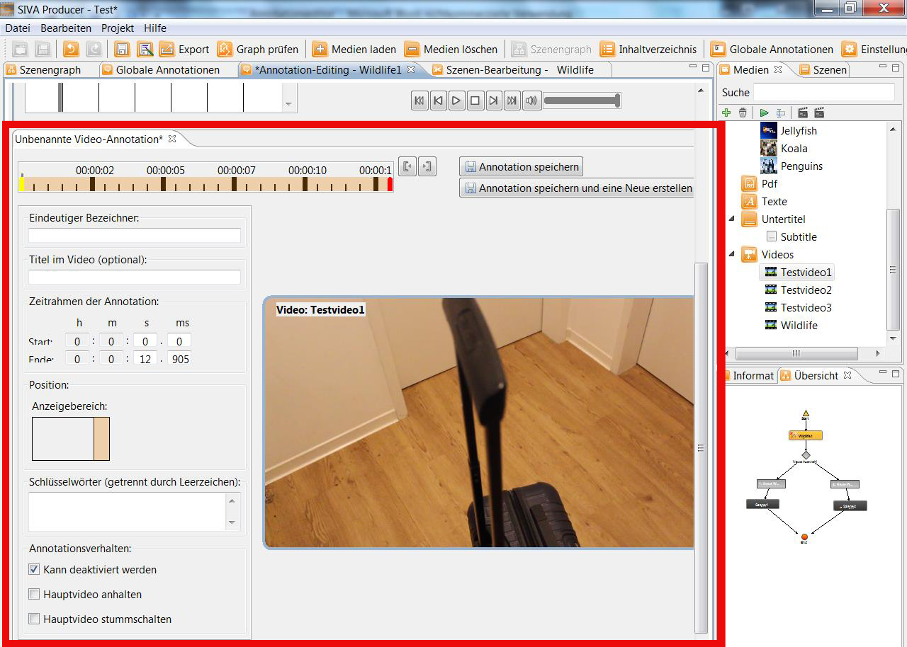

Create Video-Annotations
The editing window for video-annotations looks as follows:

Indicating range
Via double-click onto the indicating range a new window, where you can define the position and size of the video-annotion, opens.

Via double-click a window where you can choose a thumbnail for the video-annotation, opens.
That thumbnail is linked to the video. For each element from the media-repository there is just one thumbnail.
Moreover further settings for the reproduction of the audio-file can be activated or deactivated. The sound of the main
video can be silenced.

For further details see: "Create annotations"